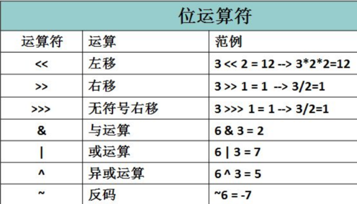

1、假如A是一个引用数据类型(或者其他普通的类), A a; 和 A a = null;的区别
(基本数据类型不能出现int a = null; 这样的写法,因为基本数据类型不能赋null值,只有类的对象可以)
A a; 是定义了一个叫a的，A类型的变量(或对象)。
A a = null; 也是定义了一个叫a的，A类型的变量(或对象)，但是同时又将null赋值给了a，也就是初始化了变量(或对象)a, null代表空值; 但并不代表
a没有赋值，只是它赋的值为null。这和上面A a;没赋值是完全不一样的。没赋值的变量(或对象)在程序中是不能使用的,而赋值之后就可以进行
使用了,而赋的是null值则只可以进行一些使用。
即相当于一个是定义,一个是定义并赋值
再从内存上来说，
A a;是在栈中占了一块内存，取名叫a
A a= null; 也在栈中占了一块内存，取名叫a,但是它同时给a这个变量(或对象)在栈中赋了一个叫null的值。注意了,"a赋了null值(空值)"和"a未赋值,该变量为空(一般也不会这么说:该变量为空)"是两个不同的概念,一个变量为空和一个变量的值为空值是不同的概念(一般没人这样区分,但我们要懂这两者的区别)。
(2)在类的成员变量中如果有:
private A a; 和 private A a = null ;
这两者的区别是一个只是定义了一个变量,另一个是定义了一个变量并同时给它赋了默认值
(3)如果Object是一个类:
Object o; 这种写法只是分配一个引百用而已。
Object o = null; 这么写则是给引用指定了一个空对象,但该对象并不指向堆。
具体差别如下：
class Test {
public static void main(String[] args) {
Object o1;
o1.toString(); /*这里编译不能通过，编度译器只认定o1是个引用，没指向任何对象，所以不能调用方法。*/
Object o2 = null;
o2.toString(); /*这里编译可以过，但是有空指针异常，编译器认定o2是一个对象，虽然是一个空对象。*/
}
}
2、>>和>>>
(注意这两个右移运算符都是右移时将符号一起跟着向右移动的, 不会一直停留在最高位, 差别就在于移动后最高位填充的是什么)
>>:
右移运算符，num >> 1,相当于num除以2。
按二进制形式把所有的数字向右移动对应位数，低位移出（舍弃），最高位的几位出现的空位补充符号位(即正数补0，负数补1, 这也保证了右移时符号位不变,是正数就一直是正数,是负数就一直是负数)。
如：-1在32位二进制中表示为：11111111 11111111 11111111 11111111，-1>>1：按位右移，符号位不变，仍旧得到11111111 11111111 11111111 11111111，因此值仍为-1
>>>:
二进制右移补零操作符，左操作数的值按右操作数指定的位数右移，移动得到的空位以0填充(无论符号位是0还是1,右移后空出来的最高位都以0填充)，
>>>是无符号右移，右移时不管符号位是0还是1，最高位出现的空位都以0补齐,这也就导致了一个负数通过>>>后, 会立刻变成正数。
如 -1在32位二进制中表示为：11111111 11111111 11111111 11111111，-1>>>1：无符号右移一位，符号位不变，得到01111111 11111111 11111111 11111111，因此值为
2^32-1(即Integer.MAX_VALUE)
无符号右移的规则只记住一点：忽略了符号位，0补最高位 无符号右移运算符>>> 只是对32位和64位的值有意义。
扩展:
"<<": 左移运算符。左移的话比较简单, 就是在左移后,最低位出现的空位补0(无论是正数还是负数都是补0)。所以左移一位就相当于乘以2(如num << 1,相当于num*2)

3、Java 语言中一个字符到底占几个字节?
首先，要搞清楚 code point() 和encoding 的区别。Java 是遵循 unicode 4.0 标准的，而内部的 character 以 utf-16 作为 encoding。unicode 4.0 标准包含从 U+0000-U+FFFF 的基本多语言平面和 U+10000-U+10FFFF 的扩展平面的文字，这是 code point。Java 的 char 类型是 16 bit 的，所以单个 char 只支持基本平面内的文字，而扩展平面的文字是由一对 char表示的。
而 String.getBytes() 这个方法是按照指定的 encoding 返回字符串，一般中文系统的默认编码是 utf-8 (linux, mac) 或者 gbk/gb18030 (windows)。只要是基本平面内的文字，utf-8码的中文都是3字节的，而 gbk/gbk18030 是2字节的。英文编码是一个字节的。
要注意外码和内码的区别,内码简单点说就是编程语言的字符所占的字节数, 外码就是字符在磁盘文件等的编码, 编码方式有GBK、utf-8等。也就是说文件中的字符所占的字节数可能和在编程语言中所占的大小不一样。
1、JNI调用的native方法实际上就是从用户态切换到了内核态的一种方式